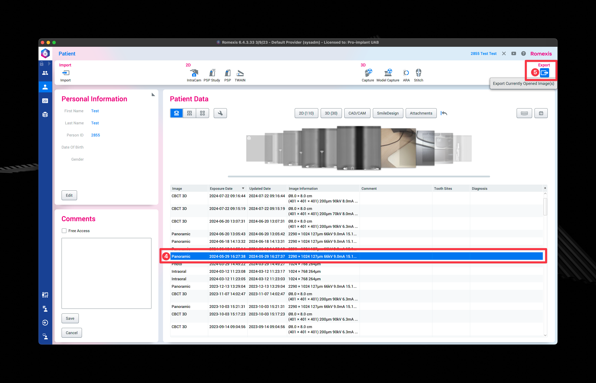
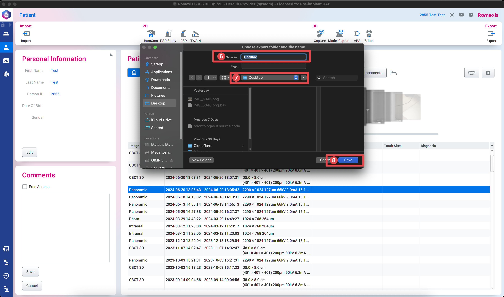

Panoraminės ar 3D nuotraukos eksportavimas
Atsidaryti Romexis programą
- Įvesti paciento vardą, pavardę

- Pasirinkti pacientą iš sąrašo

- Paspausti "Select Patient"
- Pasirinkti nuotrauką, kurią norėsite atsisiųsti
- Jei pasirinkus paspausti "Export"

Apple
- Įvesti į pavadinimo laukelį paciento vardą ir pavardę
- Nurodyti, kur norite, kad nuotrauka būtų išsaugota
- Paspausti "Save"

Windows
- Įvesti į pavadinimo laukelį paciento vardą ir pavardę
- Nurodyti, kur norite, kad nuotrauka būtų išsaugota
- Paspausti "Save"

- 7-ame žingsnyje nurodytoje vietoje ieškome išsaugotos nuotraukos